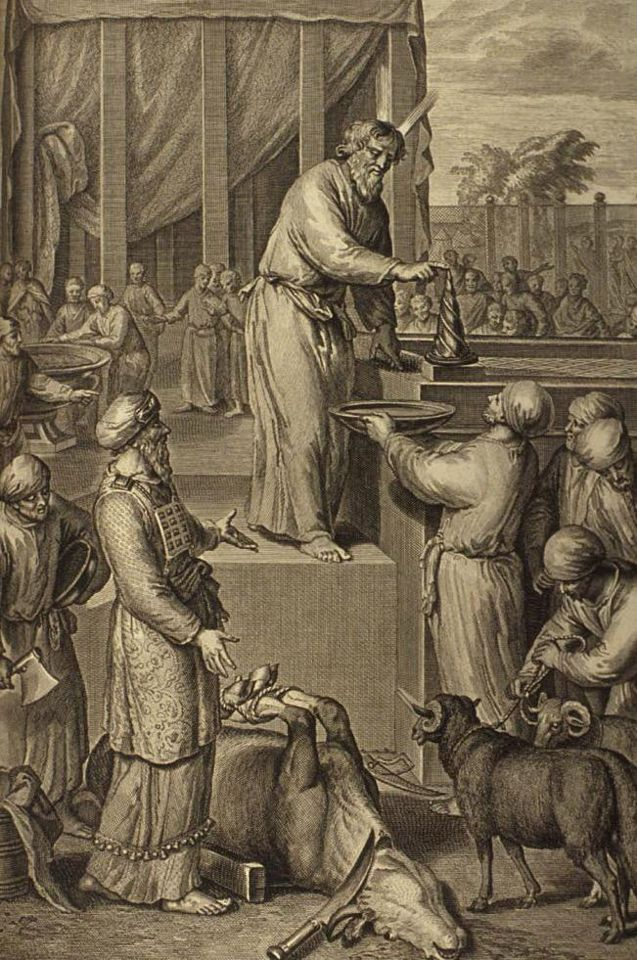

Titzaveh/Tzav

Video not playing? Watch on YouTube
Listen to the audioMP3
Source sheet
Zoom chat (11 messages)
- 21:05:50Doc Sokwhy isn't the Rebbe's shamash wearing a mask?
- 21:13:10E Segelack stop looking at your phone and pay attention
- 21:13:53Doc SokIs Dov still working?
- 21:14:17E Segeli think he's with the other family in Puerto rico
- 21:14:30Nissin AckermanDoc - this isnt a movie - shut the hell up
- 21:14:46E Segelthanks nissin
- 21:15:14Doc SokThis part isn't on the handout
- 21:32:03Doc Sokעל תנוך אזן אהרן ועל תנוך וגו׳. מזה הסדר משמע דהצווי היה ליתן תחלה על תנוך אזני אהרן ובניו. ואח״כ על בהן ידם ואח״כ על בהן רגלם. אבל במעשה מבואר שתחלה נתן משה על תנוך אזן אהרן ועל בהן ידו ורגלו ואח״כ עשה כן לבניו. וכבר עמדו חז״ל על כיב״ז בחגירה דאבנט וע״ז לא מצינו ישוב בדברי חז״ל. וצ״ל שהיה ברור למשה מפי הקבלה שאין הסדר לעיכובא. ולא דמי להא דאבנט שעמדו חז״ל בשביל שנראה מהא שעירב הכתוב לבישה דאבנט לכולם ביחד בתוך לבישת הבנים משמע שלכונה בא משא״כ כאן אין נ״מ בסדר. וראה משה לחלוק כבוד פרטי לאהרן קודם לבניו. ויש להוסיף דמעשה העגל שהיה בין הצווי והמעשה (ולא כפרש״י להלן ל״א י״ח) גרם לדבר. דלפני מעשה העגל היו אהרן ובניו שוין בסגולת הכהונה ורק משום שהיה אביהם וגדול מהם היה כה״ג. אבל לאחר העגל שמסר נפשו על ישראל כמבואר ברבה פ׳ צו שהמשיל לבן שחתר אחר בית אביו המלך א״ל פדגוגו למה זה אתה יגע תן לי ואני אחתור. א״ל המלך ידעתי כונתך להגין על בני כו׳ כך אהרן אע״ג שהיה כמו עוזר במעשה העגל מכ״מ ידע הקב״ה שהוא רק משום אהבת ישראל שמסר נפשו ונשמתו בשבילם ומש״ה מגיע לו ביחוד כה״ג יותר מפינחס שזכה לכה״ג משום שמסר נפשו על ישראל. ואהר
- 21:32:13Doc SokNetziv Shimi quoted
- 21:37:15Doc Sokoutorah.org/p/17647
- 21:37:49Doc SokMoshe conflicted not only over the idea that never again would he offer a korban as kohen, but also that his children would not inherit the priesthood and would have no more special status than that of ordinary L’vi’im. The eil hamilu’im is after all for Aharon u’vanav [and his sons] (see Vayikra 8:22, 24, 27)! In fact, we understand from history (Shoftim 18:30; tractate Bava Basra 109b) that Moshe’s offspring did not exactly become pillars of the community…